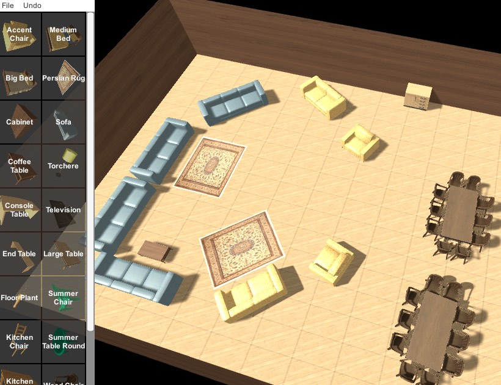
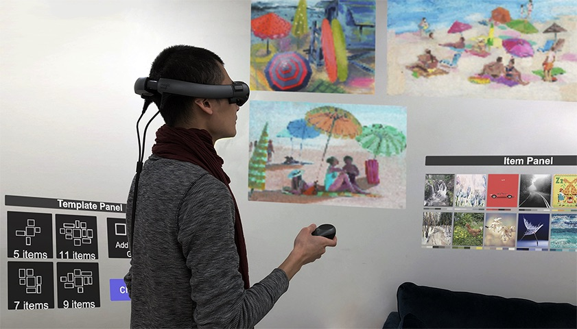
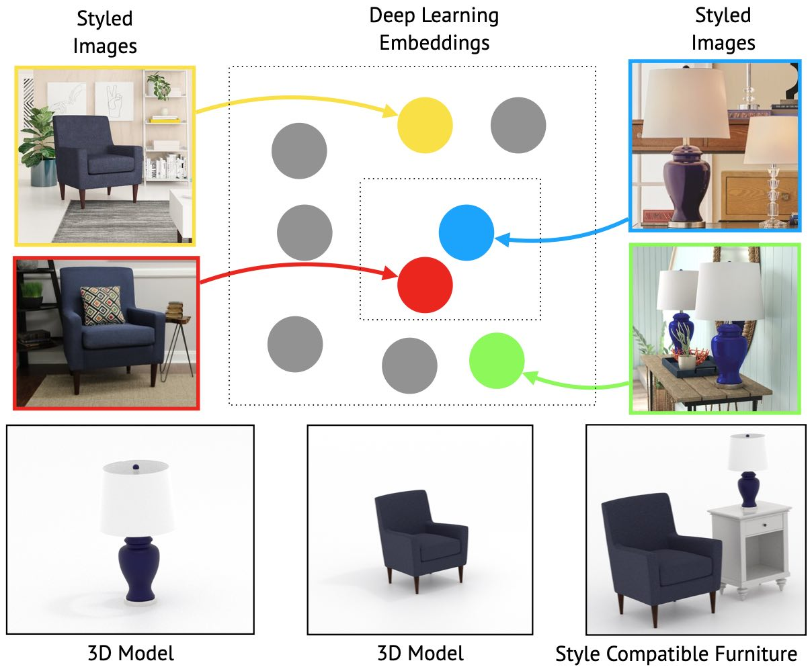
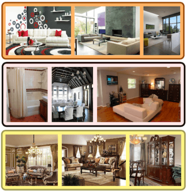
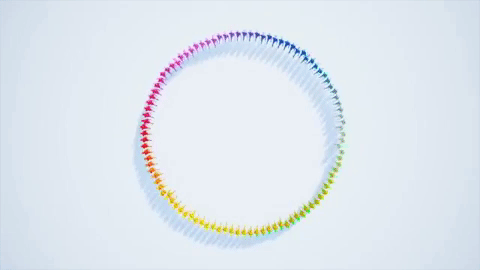
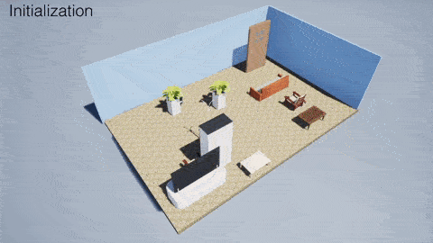
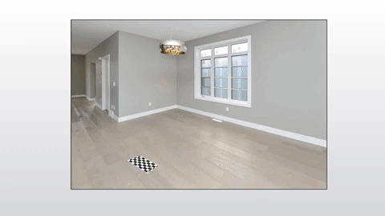
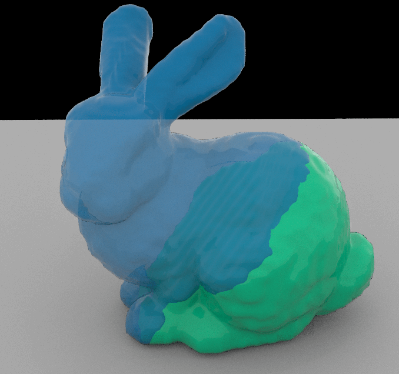

Summary
I started my professorship Jan. 2020 with the Informatics Department in the New Jersey Institute of Technology. I also work with Wayfair on computational interior design. I defended my PhD thesis at the Computer Science Department at University of California, Los Angeles, advised by Prof. Demetri Terzopoulos from the University of California, Los Angeles.
I received my M.S. from University of California, Los Angeles, working with Prof. Terzopoulos. Previously, I received my B.S. in Computer Science from Tel Aviv University.
My scientific accomplishments focus on real-time and scalable algorithms for creating large virtual environments, and for simulating AI agents, and crowds of agents in these environments. For these efforts, I received the ACM SIGGRAPH Motion in Games Best Paper Award. Additionally, I was selected as a finalist presenter of my doctoral dissertation at ACM SIGGRAPH 2018 Thesis Fast Forward, and ACM SIGGRAPH Asia 2018 Doctoral Consortium. I have also worked with Wayfair, Autodesk Research, Amazon Search, and Bloomberg.
My goal is to close the gap between virtual and physical reality. To that end, I am broadly interested in real-time optimization for visual applications, AR/VR/XR, multi-agent simulation, 3D content creation, and machine learning. To learn more about my recent work, visit my web log.
For prospective students who want to join our group (click to read)
I am always eager to work with talented students and visiting scholars who want to join our lab to do great research. If you are not already enrolled in NJIT and want to be considered, you need to apply to the Information Systems PhD program, and read on below for our lab requirements.
In addition to academic records, student applicants are encouraged to demonstrate (with code, webpages, or articles) skills when contacting me. Examples of such demonstrations include:
- Project code and/or reports from any computer graphics and/or computer vision course(s). Examples include ray tracer, Unity/Blender plugins, interactive games, geometry processing tools, deep learning applications, image processing, physical simulators, etc.
- Bonus: Your own implementation/publication of a research paper(s) on computer vision, crowd simulation, physics-based simulation, or 3D modeling (from SIGGRAPH and similar venues). We do research mostly in Python and C++ programming languages, so you should be familiar with them and be comfortable doing extensive paper implementations in both of them.
- Note that: you are strongly encouraged to train yourself to be a proficient with two of the following: Python, C++, C#, Java, Lua, and Javascript. In addition, I expect some expertise or willingness to gain expertise with Unity, Unreal Engine, Blender and other similar VFX and game engines.
- See Prospective Students for more details.
 I am teaching IT 360: Programming for Computer Graphics in Fall 2021. Check the course
website here.
I am teaching IT 360: Programming for Computer Graphics in Fall 2021. Check the course
website here.
 I am always happy to learn about interesting opportunities. Email me for more details.
I am always happy to learn about interesting opportunities. Email me for more details.
News
- Sep. 2021 - Invited speaker at the University of California Riverside computer science colloquium.
- Aug. 2021 - Invited speaker at the University of South California AI Information Sciences Institute seminar .
- Feb. 2021 - Excited to be an invited speaker at the UC Davis Computer Science colloquium .
- Dec. 2020 - Our research was used for a breakthrough in dataset development for 3D content modeling at scale.
- Nov. 2020 - Presenting our Crowd Simulation work in the Institute for Pure & Applied Mathematics: Social Dynamics beyond Vehicle Autonomy.
- Oct. 2020 - Our paper "Plane-Based Local Behaviors for Multi-Agent 3D Simulations with Position-Based Dynamics" was conditionally accepted to IEEE AIVR 2020 Workshop on Modeling and Animating Realistic Crowds and Humans (MARCH)
- Oct. 2020 - Our paper "Interactive and Scalable Layout Synthesis with Design Templates" was conditionally accepted to IEEE AIVR 2020 as an industry paper.
- Oct. 2020 - Our paper "Interactive Design of Gallery Walls via Mixed Reality" was conditionally accepted to IEEE AIVR 2020 Special session on AI for new interaction, experiences, and applications in VR/AR.
- Oct. 2020 - Invited lecture at UPenn SIG center for computer graphics, hosted by Prof. Jiang.
- Aug. 2020 - Our paper "Image-Driven Furniture Style for Interactive 3D Scene Modeling" was conditionally accepted to Pacific Graphics 2020
- Apr. 2020 - Talk at Princeton University.
- Nov. 2019 - Talk at Data Science Initiative, Harvard University.
- Nov. 2019 - Talks at UMass Amherst, Bar Ilan University, and the Interdisciplinary Center Herzliya (IDC).
- May 2019 - Talk at the MIT CSAIL Computer Graphics Group.
- Apr. 2019 - Talk at Fordham University.
- Mar. 2019 - Talk at UMass Boston.
- Mar. 2019 - Talk at Illinois Institute of Technology.
- Mar. 2019 - Talk at the Digital Worlds Institute at the University of Florida.
- Mar. 2019 - Talk at UNC Charlotte.
- Mar. 2019 - Talk at the University of Central Florida.
- Feb. 2019 - Talk at Old Dominion University.
- Feb. 2019 - Talk at the New Jersey Institute of Technology.
- Feb. 2019 - Talk at Loyola Marymount University.
- Jan. 2019 - I will serve on the Program Committee of the Conference on Computer Animation and Social Agents (CASA) 2019.
- Jan. 2019 - Invited to the ICERM's Computer Vision program, from Feb. to May 2019.
- Dec. 2018 - Invited to the Computing Community Consortium (CCC) Content Generation for Workforce Training workshop. See you in Atlanta!
- Dec. 2018 - Video of my talk in the SIGGRAPH Asia Doctoral Consortium in Tokyo, Japan (only 6 doctoral students are invited).
- Aug. 2018 - Will be presenting my thesis as a finalist at SIGGRAPH Thesis Fast Forward in Vancouver, BC, Canada.
- Jun. 2018 - I successfully defended my dissertation - "A constraint-based approach to crowd simulation and layout synthesis".
- Mar. 2018 - Video of my talk in UC Merced about our work in "Position-based multi-agent dynamics for real-time crowd simulation".
- Nov. 2017 - Our paper Position-based multi-agent dynamics for real-time crowd simulation received the Best Paper Award in MIG 2017.
Publications and Manuscripts
Interactive and Scalable Layout Synthesis with Design Templates
H.Farooki, E.Ataer-Cansizoglu, J.Choi, and T.Weiss

Plane-Based Local Behaviors for Multi-Agent 3D Simulations with Position-Based Dynamics
Interactive Design of Gallery Walls via Mixed Reality
H.Huang, Y.Zhang, T.Weiss, R.Perry and L.Yu

Image-Driven Furniture Style for Interactive 3D Scene Modeling
T.Weiss, I.Yildiz, N.Agarwal, E.Cansizoglu, J.Choi

Computer Graphics Forum (Pacific Graphics 2020)
Implementing Position-Based Real-Time Simulation of Large Crowds
Room Style Estimation for Style-Aware Recommendation
E.Cansizoglu, H.Liu, T.Weiss, A.Mitra, D.Dholakia, J.Choi, D.Wulin

IEEE International Conference on Artificial Intelligence & Virtual Reality (AIVR) , 2019
Position-Based Real-Time Simulation of Large Crowds
T.Weiss, A.Litteneker, C.Jiang, D.Terzopoulos

Fast and Scalable Position-Based Layout Synthesis
T.Weiss, A.Litteneker, N.Duncan, M.Nakada, C.Jiang, L.Yu, D.Terzopoulos

Vision Meets Cognition Workshop, IEEE Conference on Computer Vision and Pattern Recognition (CVPR), 2018
IEEE Transactions on Visualization and Computer Graphics, 2018
Deep Learning of Biomimetic Sensorimotor Control for Biomechanical Human Animation
Position-based multi-agent dynamics for real-time crowd simulation
Automated Layout Synthesis and Visualization From Images of Interior or Exterior Spaces
T.Weiss, M.Nakada, D.Terzopoulos

Vision Meets Cognition Workshop, IEEE Conference on Computer Vision and Pattern Recognition (CVPR), 2017
Theses
A constraint-based approach to crowd simulation and layout synthesis
Optimizing Design of Physical Objects for Fabrication
T.Weiss, G.Klar, D.Terzopoulos

Master's thesis at UCLA Computer Science Dept. , 2016, Paper at UCLA Computer Science Dept. Technical Report no. 170005 , 2016